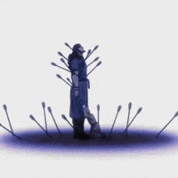

Thors' death — Origin of the wound
The killing of Thors is the decisive wound that redefines Thorfinn’s life: loss becomes purpose, and purpose becomes a straight line toward hatred.
Anger. Redemption. Memory. Power. The poetry inside the blades.
Season 1 excavates the meaning of violence and identity. It asks: when a life is driven by a single goal — revenge — what remains of the person who once loved, dreamed and chose differently?
This page maps the emotional architecture of the season: the flames of anger, the seeds of redemption, the weight of memory.

Anger is not just emotion here: it is identity. For Thorfinn, rage becomes a tool and a prison. The famous cry — “I'm gonna kill you” — functions like a vow that narrows his world until nothing else fits.
"I'm gonna kill you" — a vow that steals possibility.
Thors’ small presence carries the story’s moral gravity. His words (do not live by the sword) resonate later as contrasts: the father’s idea vs. the son’s path. That friction is the narrative's heartbeat.
“You don't have enemies.” — Thors
Askeladd is a study in contradictions: a leader who respects courage, a manipulator who uses loyalty, a man shaped by shame and a private logic. He teaches Thorfinn both skill and ruthless survival — and in doing so he models a path that is not heroism but agency.
Important quote to highlight: "Everyone is a slave to something."
The killing of Thors is the decisive wound that redefines Thorfinn’s life: loss becomes purpose, and purpose becomes a straight line toward hatred.

The fight in the bridge is spectacle and test: Thorfinn learns technique and endurance, and the sequence shows the difference between brute force and hardened skill.

Every clash with Askeladd reveals respect hidden under resentment. Thorfinn kills to test himself against his father-figure; Askeladd's leadership complicates hatred with admiration.

The dagger falling and the montage of memories crystallize Thorfinn’s inner avalanche: the physical act of fighting collapses into memory and identity.
Askeladd's murder of the king is the geopolitical spark: it creates a new trajectory for all characters and forces the story to shift from personal revenge to political consequence.
Thors and Askeladd are two poles: Thors embodies renunciation and moral courage; Askeladd embodies cynical agency and political realism. Thorfinn stands between them, inheriting contradictions.
.jpg)
We tag scenes by mood: dark (betrayal, murder), violent (battles), reflective (Thors' teaching), ecstatic (rare hope). This map helps you navigate the emotional topography.
Vinland Saga balances brutality with moments of fragile beauty. Season 1 sets a tone where violence is shown with consequences; where memory, word and act collide; and where a single father's voice can seed a possibility for change.
Explore deeper: Development / Fight breakdown · Characters